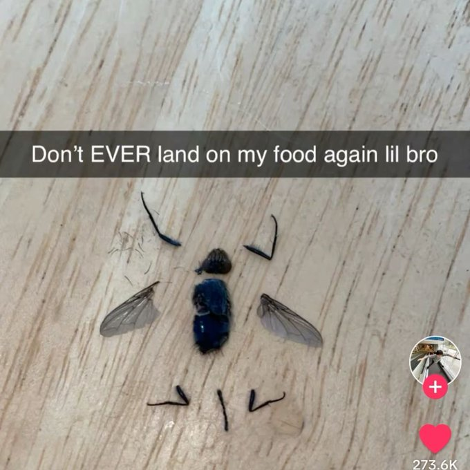
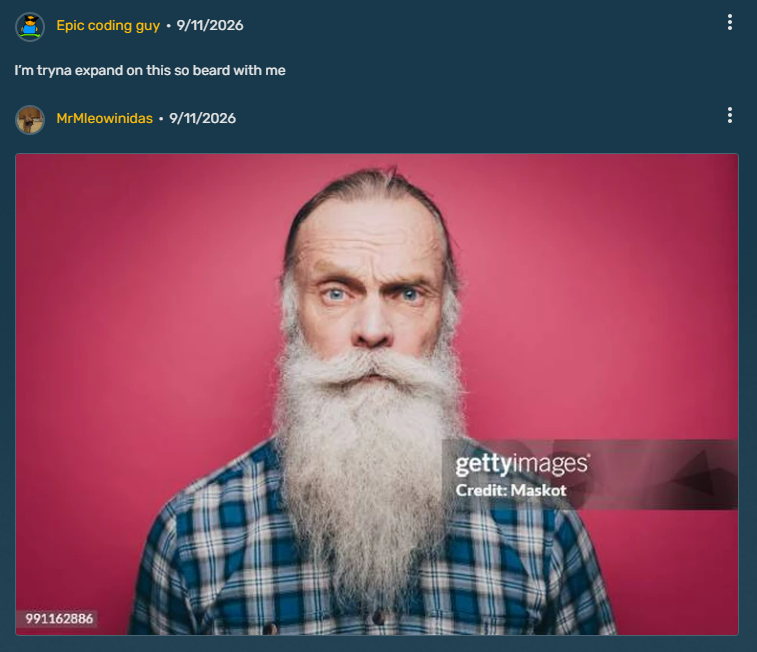

Existentialism
Change
Rehabilitation
Regret
Endurance
Numbness
Longing
Helplessness
Responsibility
Guilt
Compassion
Self-Sacrifice
Intimacy
Safety
Trust
Optimism
Meaning
Passion
Curiosity
Hopefulness
Performance
Vulnerability
Zealotry
Submissiveness
Reliance
Responsibility
Fear
Acceptance
Exposure
Decision-Making
Concern
Questioning
Healing
Safety
Empathy
Honesty

In case you didn't know, because I haven't told you yet, group 1 and 2 are actually meant to be soft parallels of each other. In fact, Oli and Kapi are supposed to be parallels of each other, and so are Doll and Vad. I'm not gonna list everything, mostly because I'm tired and want to hop off VSCode, but feel free to hop back over to the characters and read through their biographies again side-by-side. See if you can spot any parallels.
Is this an excuse to be lazy and not type anymore? No. It's an excuse to go to bed and not type anymore.

REVERENTIAL
PULSE
STRINGS
MASK
safe with you
please don't let history repeat itself
I'm trying, I am
WEATHER
DISGUISE
DOMINANCE
let me try to understand
tell me you're scared too
you can tell me anything
[Signal Interference]